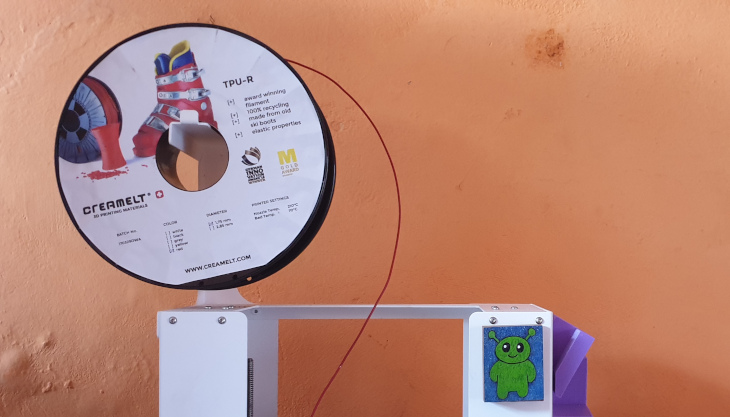
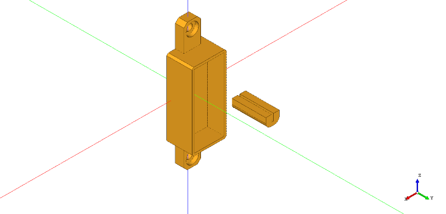
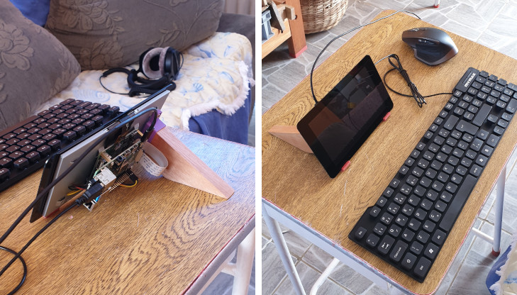

Minimalist Raspberry Pi Stand

Last month I had the pleasure to visit Ireland and spend some quality time with a special person while exploring that enchanting land. As I was in Europe I decided to buy myself a raspberry pi and an official touchscreen. My goal was to evaluate if using this SBC as a replacement for a desktop computer for simple things like web browsing and of course to play some retro games.
I knew I’d have to come up with some way of mounting the screen and my plan was just to 3d print something from internet. What I didn’t expect was that I’d find my big 3d printer out of order once back home. This left me only with my small 3d printer ( 100 x 100 mm printing area ) making hard to find a suitable 3d model of a stand.
Cadquery to the rescue. My idea was to make something minimalist and break it down into small pieces. The support itself is a piece of a Brazilian wood called “cedrinho” with a 60° cut. No special reason for the size, It’s just what I had at hand.
The 3d printed parts are the coupler and the pads. The coupler makes the bridge between the threaded holes on the metal backing of the screen and the wood piece. The pads are just to prevent the screen of touching the desk directly.
I used pla for the coupler ( man, this purple pla is lasting forever lol ) and the pads are printed using a very interesting filament made by the folks at RappersWil Technical College. It’s a flexible TPU made out of recycled skying boots ( lol again ), and I’ll tell you what, It just works.

I’m not trying to be a blogger or something alike here, but this creamelt guys have some interesting materials available.
Here follows the script for the 3d models.

import cadquery as cq
pi_support = cq.Workplane("front").box(10.0, 5.0, 65.65+10.0) .\
faces(">Y").workplane().pushPoints([(0, 65.65/2.0), (0,-65.65/2)]).cboreHole(4.0, 7.5, 2.0) .\
faces(">Y").workplane().rect(17.8+2.5, 43.0+2.5).extrude(-5.0) .\
faces(">Y").workplane().rect(17.8+2.5, 43.0+2.5).rect(17.8, 43.0).extrude(10.0) .\
edges(">X and |Y").chamfer(1.0).edges("<X and |Y").chamfer(1.0) .\
edges(">Z and |Y").chamfer(2.0).edges("<Z and |Y").chamfer(2.0)
pad = cq.Workplane("front").box(8.0, 20.0, 6.0) .\
faces(">Z").workplane().rect(1.2, 20.0).cutBlind(-4.0) .\
edges("<Z and |Y").fillet(3.0).translate((-10,30,0))

The last piece of the puzzle is a smalll piece of wood with a 60° angle cut. In order to cut that I used a guide that I actually printed in the past, but so far didn’t share the script. If you’re curious about how to use this thing you can watch this video from David Barron ( he’s talking about a 45° guide, I used a 60° guide, though).

import cadquery as cq
from math import sqrt
# A simple 60 degrees hand saw guide for woodworking
size = 35.0 # mm, height and lenght and of the guide. The width is double this value
tab_top = 18.0 # mm, thickness of the top tab
tab_back = 12.0 # mm, thickness of the back tab
magnet_diameter = 5.2 # mm
magnet_thickness = 8.7 # mm
magnet_spacing_between = 30.0 # mm
clearance = True
clearance_size = 2.0 # mm
guide2 = cq.Workplane("front").line(size*sqrt(3), 0).line(-size*sqrt(3), size).close().extrude(size).\
faces('>(1,1,0)').workplane().pushPoints([(-magnet_spacing_between/2, size/2-tab_top/2), (magnet_spacing_between/2, size/2-tab_top/2)]).hole(magnet_diameter, magnet_thickness) .\
faces("<Y").workplane().transformed(offset=(0, -tab_top, -tab_back)).rect(size*2, size).cutBlind(-size)
if clearance:
guide2 = guide2.faces('>(1,1,0)').workplane(centerOption='CenterOfBoundBox').move(0, -tab_top).rect(size*2, size).cutBlind(-clearance_size)
guide2 = guide2.faces("<X").workplane(-50).rect(size, size*2).cutBlind(-30.0)
guide2 = guide2.faces("<Y").workplane(-30).rect(size*2, size*2).cutBlind(-30.0)
This is only a temporary solution, but hey, It works. Now I can explore this SBC and decide which application on my list of projects suits it the best.
Cheers!